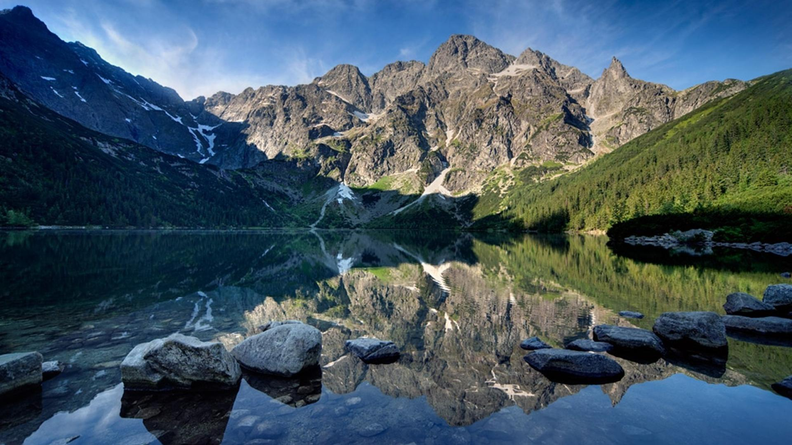
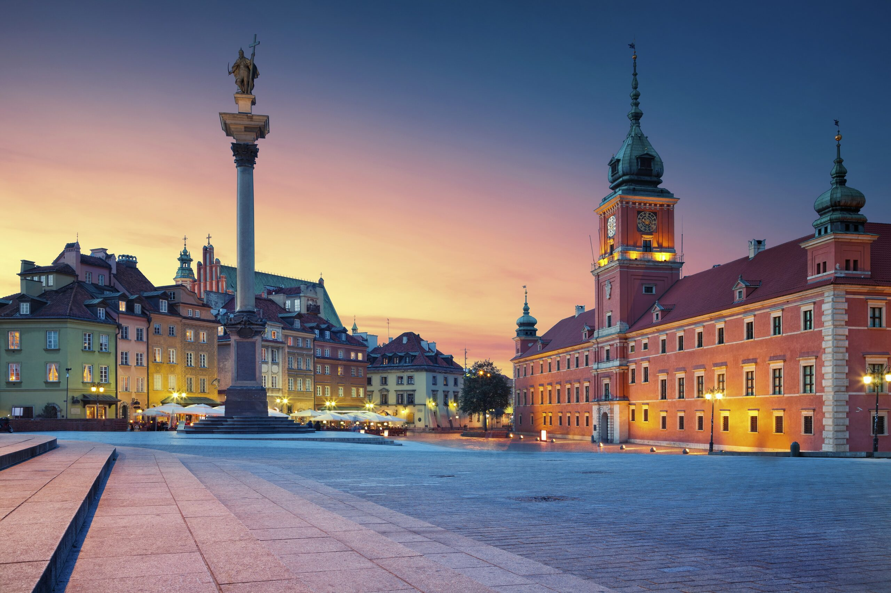

Explore Poland's Landscapes
Poland's geography features diverse landscapes from mountains to plains, rivers to lakes. Discover the natural beauty and geographical wonders of Poland.
Learn about Poland's terrain, climate, and natural features in an engaging way.

Terrain & Borders
- Poland is located in Central Europe, bordered by seven countries: Germany, Czech Republic, Slovakia, Ukraine, Belarus, Lithuania, and Russia.
- The northern border is along the Baltic Sea coastline.
- The southern regions feature the Carpathian and Sudeten mountain ranges.
- Central Poland consists of vast plains and lowlands.
- Mountains: The Tatra Mountains are the highest in Poland.
- Rivers: The Vistula (Wisła) is the longest river at 1,047 km.
- Lakes: Poland has over 9,000 lakes, with Śniardwy being the largest.
Climate & Nature
Poland has a temperate climate with four distinct seasons, influenced by continental and oceanic factors.
- Average temperature: 7-8°C annually.
- Precipitation: About 600 mm per year.
Regions & Landmarks
Poland is divided into 16 voivodeships, each with unique geographical features.
- Masovia: Home to Warsaw and central plains.
- Lesser Poland: Features the Tatra Mountains and Kraków.
- Pomerania: Baltic Sea coast and lakes.
- Silesia: Industrial region with mountains.
